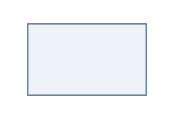

Element role
Entity
Recorded core meaning: A business meaning independent of a storage representation.
chen.entity
- Category
- element
- Core binding
- EL07
- Semantic family
- concept

Declare this role
element Example as chen.entityPlace the definition in a view whose profile permits this role. Reuse a shared definition with use Example.
Available in these profiles
canvas.bmc@1canvas.empathy@1canvas.lean@1canvas.pest@1canvas.pestle@1canvas.porter5@1canvas.scorecard@1chart.arc@1chart.basic@1chart.beeswarm@1chart.boxplot@1chart.calendar@1chart.candlestick@1chart.circlepack@1chart.density@1chart.densityheatmap@1chart.dotplot@1chart.edgebundle@1chart.force@1chart.funnel@1chart.gauge@1chart.heatmap@1chart.histogram@1chart.packedbubble@1chart.parallelcoords@1chart.qq@1chart.quality@1chart.quantiledot@1chart.radar@1chart.radialtree@1chart.sankey@1chart.sunburst@1chart.tidytree@1chart.topk@1chart.treemap@1chart.violin@1chart.wordcloud@1ddn@1geo.choropleth@1geo.outline@1geo.symbols@1matrix.ansoff@1matrix.bcg@1matrix.crud@1matrix.heatmap@1matrix.raci@1matrix.relations@1matrix.storymap@1matrix.tows@1panels.basic@1panels.composed@1panels.journey@1panels.pyramid@1panels.venn@1table.records@1timeline.basic@1Standard presentation values
{
"colour": "#365C8D",
"fill": "#EEF3F9",
"shape": "profile",
"glyph": "chen-entity",
"silhouette": "rect",
"fallback": "entity",
"text_label": "Entity",
"token_required_when_ambiguous": true,
"defaults": {},
"composition_defaults": {
"sections": [
"name",
"type",
"table",
"notes"
],
"order": [
"table",
"notes"
],
"note_height": 180,
"note_wrap": "auto"
}
}Registered metadata fields
x_activation, x_activity, x_affinity, x_art, x_bands, x_birth, x_boundary, x_boxed, x_c4tag, x_category, x_chen, x_cmmn, x_coil, x_constraint, x_contact, x_continuation, x_contract, x_custody, x_death, x_derive, x_diagram, x_epc, x_estimate, x_event, x_evidence, x_gate, x_gateway, x_hmscref, x_icon, x_idef0, x_instance, x_interfaces, x_invariant, x_io, x_jump, x_mindmap, x_objectified, x_pack, x_partition, x_petri, x_planning, x_protocol_role, x_rack, x_reconciliation, x_record, x_report, x_requirement, x_role, x_rule, x_sdl, x_sentry, x_sets, x_state, x_states, x_sticky, x_subdiagram, x_template, x_timeconstraint, x_ui, x_use, x_usecase, x_values, x_vsm, x_workflow, x_zone